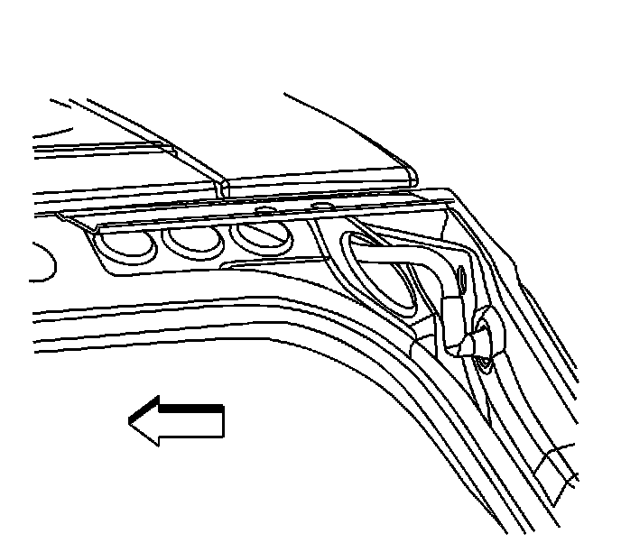
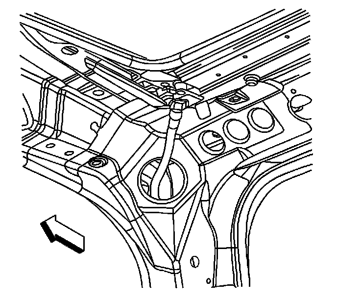

Removal and Replacement
Sunroof Housing Rear Drain Hose Replacement
Removal Procedure
1. Remove the rear trim panel. Refer to Body Side Rear Trim Panel Replacement (w/TB5) (Service and Repair)Body Side Rear Trim Panel Replacement (w/o TB5) (Service and Repair) .
2. It is only necessary to lower the headliner. Only do those step in headliner replacement that will lower the headliner enough to gain access to the part. Refer to Headlining Trim Panel Replacement (Service and Repair) .
3. Disconnect the drain hose from the spigot, located in the rear corner of the sunroof module.

4. Remove the grommet from the rear drain hose valve.

5. Remove the drain hose through the large hole in the rear pillar.
Installation Procedure
1. Install the drain hose through the large hole in the rear pillar.
2. Install the grommet to rear drain hose valve.
3. Install the hose to spigot located in the rear corner of the sunroof module.
4. Install the headliner. Refer to Headlining Trim Panel Replacement (Service and Repair) .
5. Install the rear trim panel. Refer to Body Side Rear Trim Panel Replacement (w/TB5) (Service and Repair)Body Side Rear Trim Panel Replacement (w/o TB5) (Service and Repair) .